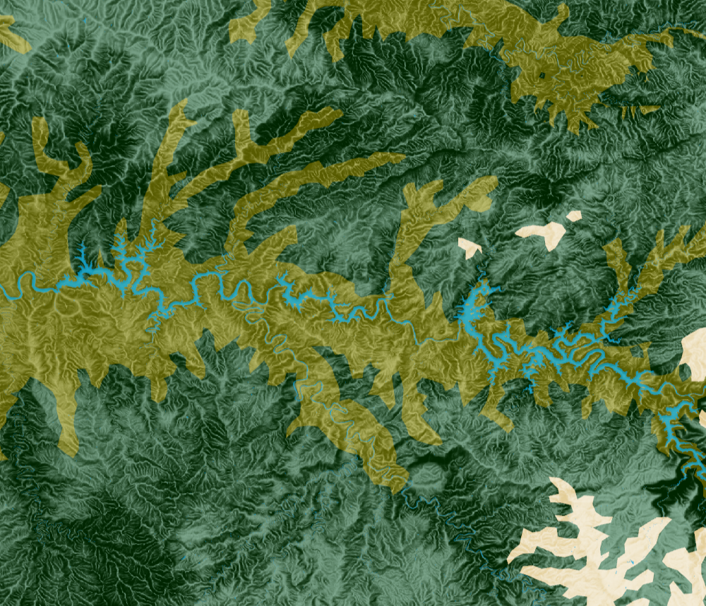
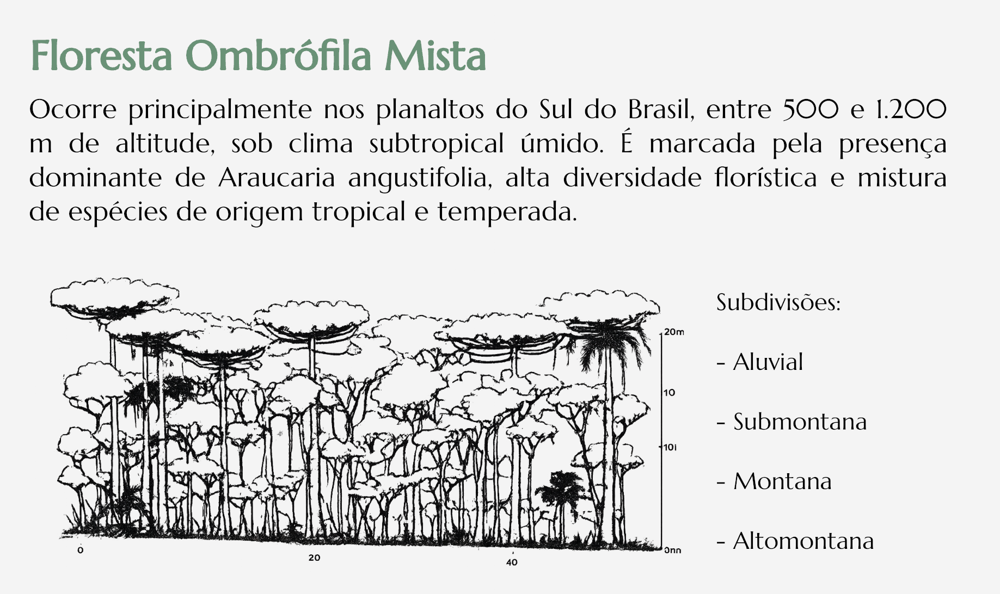
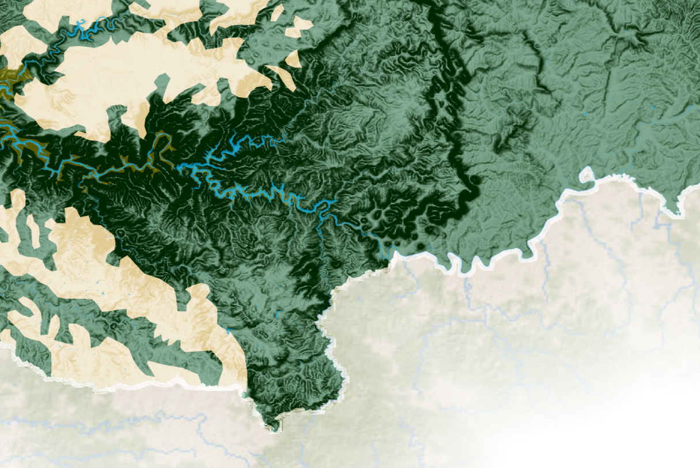

Unidades Fitogeográficas do Paraná
O Paraná, inserido no domínio da Mata Atlântica, apresenta diversidade fitogeográfica resultante das variações geomorfológicas, pedológicas e climáticas, que originam florestas intercaladas por formações herbáceas e arbustivas. Essa diversidade se expressa nas Florestas Ombrófila Densa, Ombrófila Mista e Estacional Semidecidual, além de Estepes (Campos) e Savanas.

Mapa elaborado a partir das ilustrações e conceitos apresentados no incrível trabalho de Roderjan, Galvão, Kuniyoshi & Hatschbach (2002), que apresenta a distribuição das formações fitogeográficas do estado do Paraná com base em estudos clássicos da vegetação regional, como nas interpretações pioneiras de Reinhard Maack.
Estudos sobre como diferentes fatores ambientais se combinam para moldar a vegetação sempre despertaram meu interesse. Nascida e criada na Floresta Ombrófila Mista, lembro de ainda criança descer a Serra do Mar observando pela janela do carro. As araucárias iam ficando para trás, dando lugar a florestas mais densas e úmidas. Anos depois, durante a graduação, passei a compreender melhor essas mudanças e hoje, viajando pelo estado, continuo reparando em como a vegetação se transforma, como na estrada em direção a Ponta Grossa, onde surgem gradualmente os campos.
Assim, este mapa foi criado como uma interpretação cartográfica dessa diversidade, buscando integrar visualmente os fatores ambientais que estruturam a distribuição das unidades fitogeográficas e transformar essa complexidade ecológica em uma visualização intuitiva e integrada.
Especificações técnicas
A partir da base altimétrica derivada do modelo digital de elevação TOPODATA, disponibilizado pelo Instituto Nacional de Pesquisas Espaciais (INPE), foram geradas diferentes composições por meio da combinação de produtos incluindo DEM, hillshade e slope.
Foram aplicados diferentes níveis de suavização (blur) e técnicas de sobreposição entre camadas, utilizando modos de mesclagem (blend modes) como Multiply, Overlay e Soft Light, buscando melhorar a percepção do relevo e equilibrar o detalhamento topográfico com a legibilidade do mapa.
Detalhes


